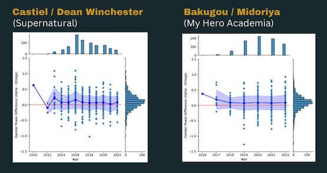
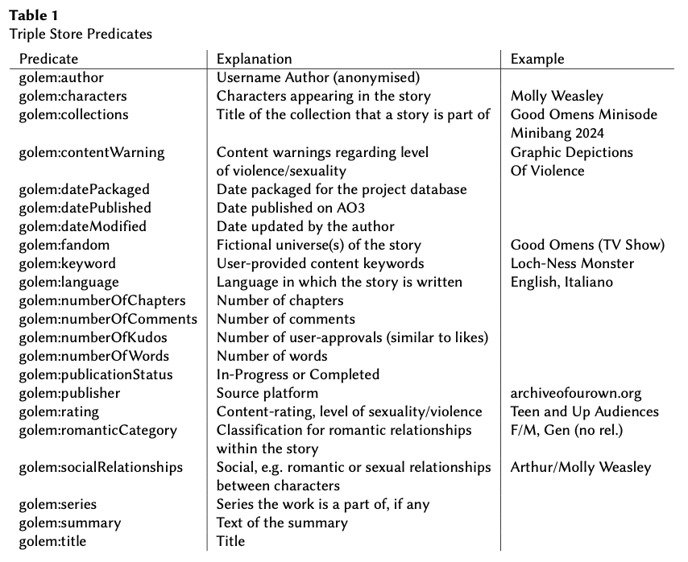
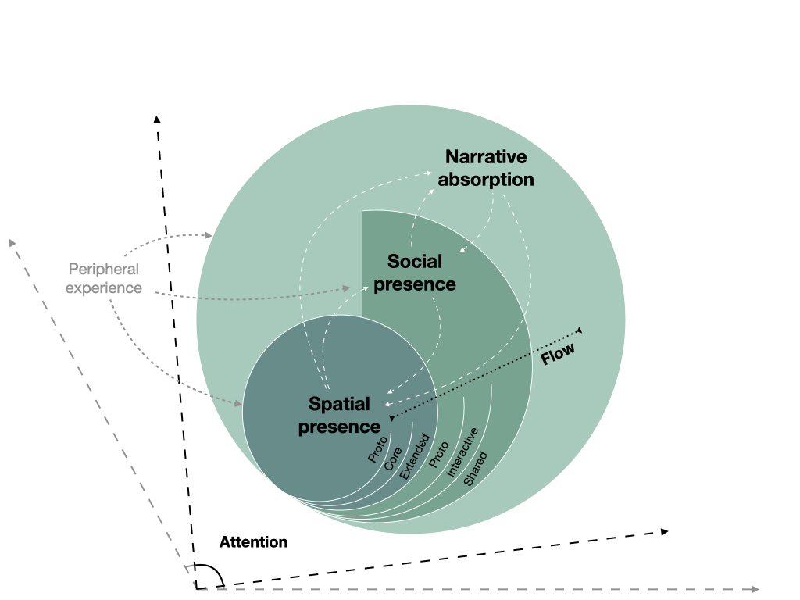
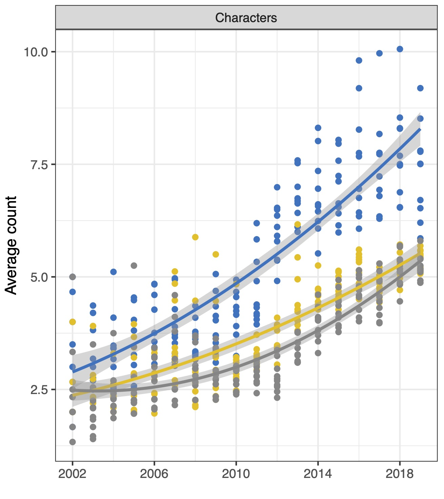
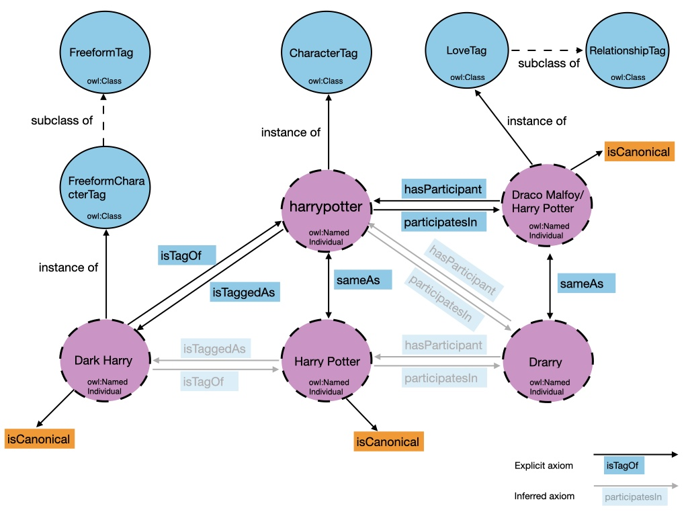
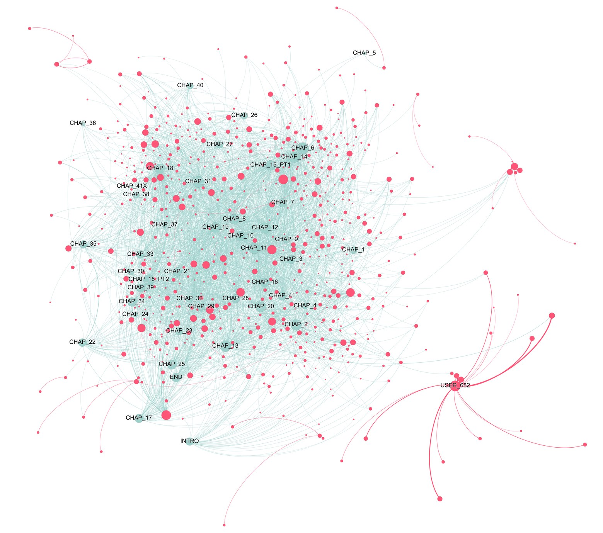
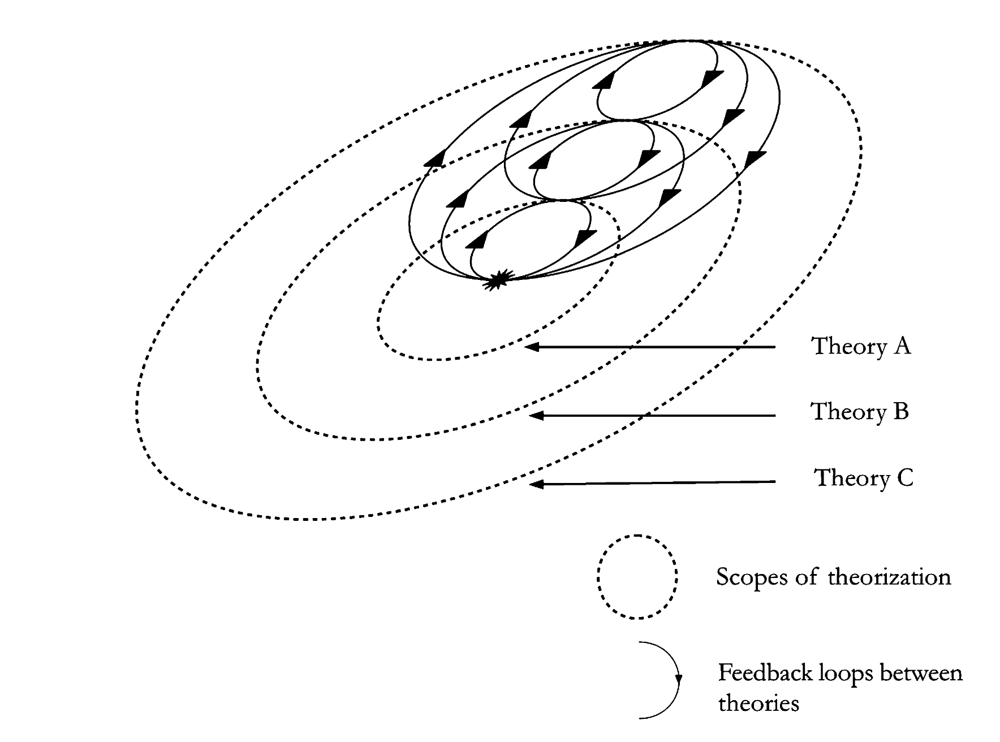

Introducing the GOLEM Knowledge Graph and interface.
Topic modelling of readers’ comments on web novels.

Analysis of gender power difference between characters.

A Graph-Based Representation of Narrative and Fiction

We presented a theoretical model clarifying the differences between various terms used in empirical research about users’ cognitive and affective engagement with various…

We analyse stories in Harry Potter fan fiction published on Archive of Our Own (AO3), using concepts from cultural evolution.

Ontology of tags used by authors of Harry Potter fanfiction on AO3.

We presented an overview of the possibility offered by a digital social reading platform like Wattpad for the study of reader response.

Narrative is seen and used in many different ways that can be conceived as systems, i.e. considering that the properties of narrative cannot be studied in isolation but are…